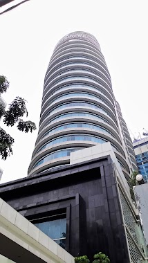
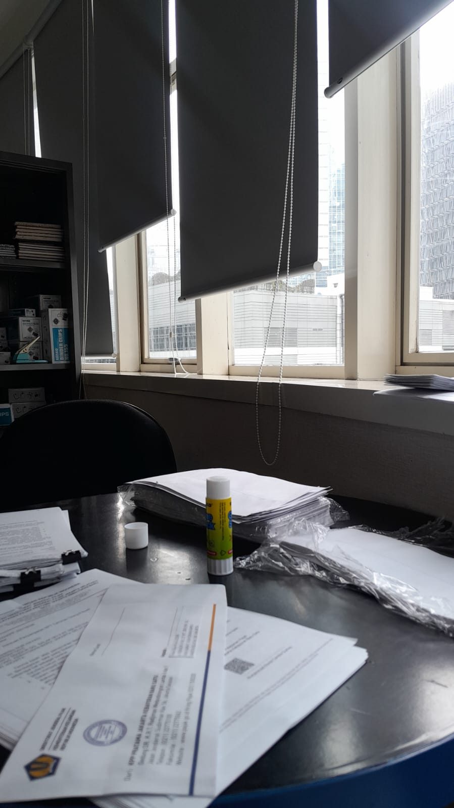

01
BAGI PESERTA MAGANG
- Mendapatkan pengalaman kerja nyata.
- Meningkatkan keterampilan dan pengetahuan.
- Melatih tanggung jawab dan kedisiplinan.
- Memahami budaya dan etika kerja.
MEMUAT PRESENTASI
Praktik Kerja Lapangan • SMK Negeri 20 Jakarta
INDUSTRIAL INTERNSHIP REPORT • 2026
KPP PRATAMA JAKARTA KEBAYORAN BARU SATU
GULIR KE BAWAH
Profil Tim
Empat peserta magang dari jurusan Rekayasa Perangkat Lunak yang melaksanakan kegiatan magang di KPP Pratama Jakarta Kebayoran Baru Satu.
Pendahuluan
Magang / industri merupakan bagian penting dari kurikulum SMK yang menjembatani proses belajar di sekolah dengan dunia kerja yang sesungguhnya. Melalui kegiatan ini, siswa memperoleh pengalaman kerja langsung yang tidak sepenuhnya dapat diperoleh di dalam kelas.
Ilmu dan keterampilan yang diperoleh di bangku sekolah — khususnya dari jurusan Rekayasa Perangkat Lunak — dapat diterapkan nyata dalam situasi kerja profesional, sekaligus melatih siswa mengenal lingkungan kerja yang menuntut kedisiplinan, etika, dan tanggung jawab.
Selain keterampilan teknis, magang juga mengembangkan keterampilan nonteknis seperti komunikasi, kerja sama tim, dan manajemen waktu.
KPP Pratama Jakarta Kebayoran Baru Satu dipilih sebagai tempat magang karena merupakan instansi pemerintahan di bidang perpajakan yang memiliki sistem administrasi dan budaya kerja profesional, sehingga menjadi sarana belajar yang baik bagi siswa.

Foto suasana kantor
ganti: assets/img/suasana-kantor.jpg

Foto aktivitas kerja
ganti: assets/img/aktivitas.jpg
Sasaran Kegiatan
Menerapkan ilmu dan keterampilan yang diperoleh di sekolah ke dalam pekerjaan nyata.
Menambah wawasan mengenai dunia kerja dan dinamika profesinya.
Memahami sistem kerja di lingkungan instansi pemerintahan.
Melatih kedisiplinan, tanggung jawab, dan sikap profesional.
Mengembangkan kemampuan komunikasi dan kerja sama tim.
Memperoleh pengalaman kerja sesuai kompetensi.
Nilai Kegiatan
Tantangan Selama Magang
Galeri Kegiatan
Foto dokumentasi kegiatan selama melaksanakan magang di KPP Pratama Jakarta Kebayoran Baru Satu.
Penutup
Kegiatan magang di KPP Pratama Jakarta Kebayoran Baru Satu memberikan pengalaman dan wawasan baru mengenai dunia kerja, khususnya dalam lingkungan instansi pemerintahan di bidang perpajakan. Melalui kegiatan ini, peserta magang dapat menerapkan pengetahuan yang diperoleh di sekolah, memahami proses administrasi, meningkatkan kedisiplinan, tanggung jawab, serta kemampuan berkomunikasi dan bekerja sama.
“Pengalaman hari ini menjadi bekal untuk menghadapi dunia kerja di masa depan.”
END OF REPORT • KPP PRATAMA JAKARTA KEBAYORAN BARU SATU